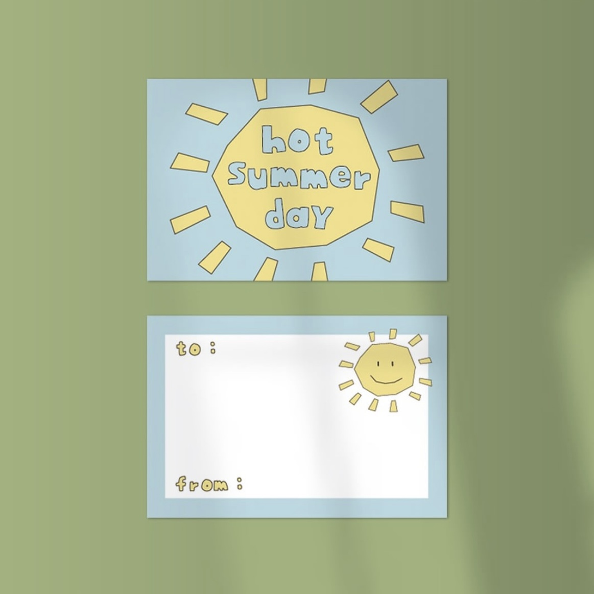
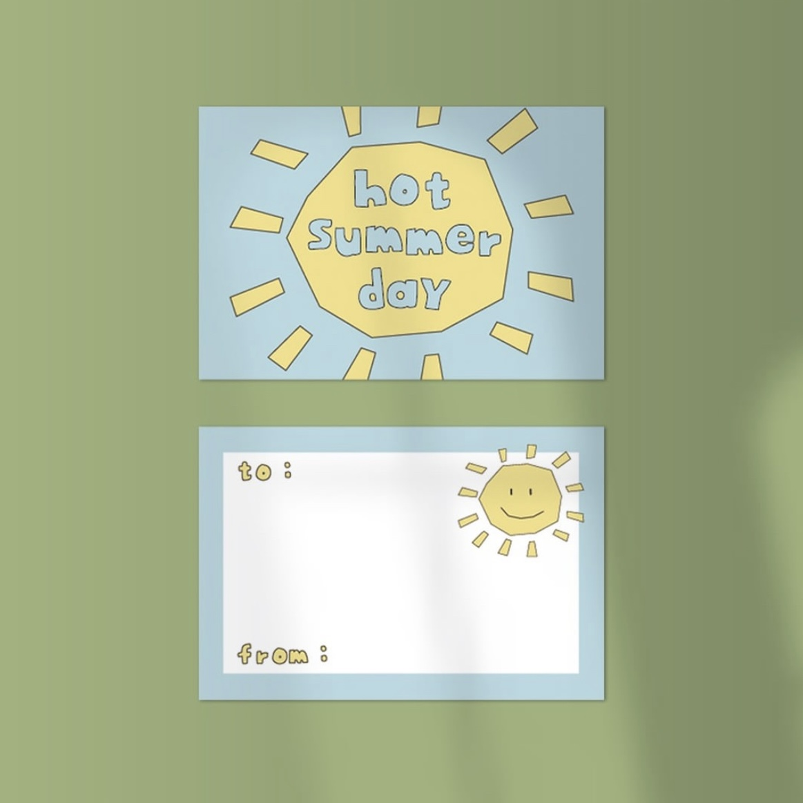

포리방범대
성인식 개선을 위해 만들어진 포리란 캐릭터는 귀여운 만화를 통해
사람들에게 성지식을 전달하고 인식도 개선하기 위해 만들어졌습니다.
포리, 포링이, 젤리 세명의 포리방범대는 사람들의 성인식 개선을 위해 모였습니다.
귀여운 캐릭터를 다양한 굿즈도 제작하여 판매하는 활동도 하였습니다.
포리 인스타그램
만화로 쉽게 배우는 귀여운 성지식 안내서
성교육/성인식 플랫폼입니다.
포리방범대의 다양한 소식과 함께 만화로 성지식을 얻을 수 있습니다.
포리 유튜브와, 틱톡 계정도 있으니 많은 관심부탁드립니다!
유튜브 - 포리tv / 틱톡 - @forwee.official
창작 디자인 맛보기
다양한 인포그래픽을 그리며 툴을 자유롭게
사용할 수 있게 연습을 꾸준히 했습니다.
그렇게 꾸준히 연습해 GTQ와 GTQI 자격증을 취득하였습니다.
이 창작 디자인 작품은 저의 인생을 타임라인 형식으로 표현해 본 것입니다.
저의 성격을 나타낼 수 있도록 활발한 느낌의 노랑색을
바탕으로 디자인하였습니다.
창작 디자인 맛보기
건강 관련 인포그래픽 만들기입니다.
이 창작 디자인 작품은 고혈압의 날을 기반으로
고혈압이 무엇인지, 이를 에방하는 방법, 고혈압이 어떤 영향을
주는지를 알려주는 인포그래픽입니다.
창작 디자인 몰아보기
더 다양한 작품을 보고 싶으면 아래 큐알코드를 인식해주세요!
인포그래픽 작품 이외의 영상 작업물도 업로드 중입니다.
그 외 정보
학력: 경성대학교 미디어콘텐츠학과 졸업 예정
자격증:
대외활동: 커넥트현대 서포터즈, 오디너리 동아리, 일경험 프로젝트
 

인포그래픽 작품 이외의 영상 작업물도 업로드 중입니다.